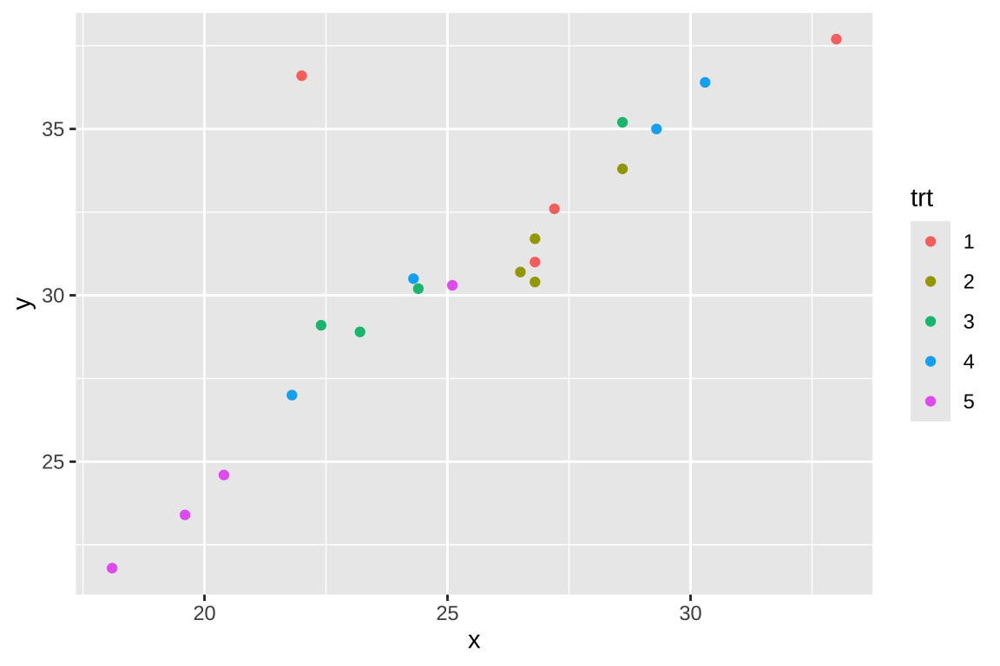

english2$method <- relevel(english2$method, ref="C")8 공분산분석
8.1 공분산분석 개요
서로 다른 집단을 비교하는 실험이나 관측연구에서 관심이 있는 처리(treatment)나 요인(factor)뿐만 아니라 다른 예측변수들도 반응변수에 영향을 미친다. 이러한 예측변수들의 영향을 제거하기 위한 방법은 여러가지가 있지만 실험인 경우 임의화 방법(randomization)으로 그 영향을 상쇄시킬 수 도 있고 관측연구인 경우에는 사례-대조연구 방법을 이용하여 그 영향을 최소화하려고 노력을 한다.
하지만 일반적으로 관측연구(observational study)는 피실험자가 임의로 처리에 배정되지 않고, 다양한 요인을 제어하기 어렵기 때문에 전체변동에서 관심있는 요인(처리)의 효과를 제외한 오차에 의한 변동이 크다.
많은 경우에 처리 이외의 여러 가지 변수들이 반응변수에 영향을 미친다. 이러한 경우에 이러한 독립변수(또는 예측변수)를 모형에 포함시켜서 그 영향을 반영하고 동시에 자료의 변동을 부가적으로 설명해주는 방법이 공분산 분석(analysis of covariance; ANCOVA)이다.
공분산 분석에서 고려되는 예측변수를 공변량(covarite)라고 부른다. 대부분의 실험연구에는 실험 전에 여러 가지 점수를 측정하는데 이 경우 이러한 점수를 공변량으로 모형에 포함시켜주는 것이 좋다 (예: 실험 전 상태에 대한 점수, 시험점수, IQ 점수). 또한 임상실험을 여러 개의 병원에서 진행하는 경우 병원 효과를 공변량으로 자주 사용한다.
공분산 모형의 주요한 장점은 반응변수에 대해 설명력이 높은 공변량을 사용하게 되면 잔차제곱합이 감소하여 처리의 효과에 대한 검정력을 높일 수 있다. 또한 공변량에 의한 편이(bias)도 줄이는 효과도 있다
간단한 예제로 분산분석 모형과 공분산분석 모형의 효율을 비교해 보자. 아래 왼쪽 그림은 3개의 집단을 비교하는 경우 반응변수의 분포를 상자그림으로 나타낸 것이다. 만약 반응변수가 나이와 상관관계가 높을 때 나이를 공변량으로 포함한 공분산분석 모형을 사용하면 오차에 의한 변동, 즉 잔차제곱합의 크기가 상재적으로 작아져서 처리의 효과에 대한 검정력이 높아진다.(오른쪽 그림)
공변량으로 사용할 수 있는 대표적이; 변수는 다음과 같다.
- 기저 상태(baseline)
- 임상실험에서 환자가 실험에 참여하기 전에 환자의 상태(baseline condition, severity)가 처리의 효과 외에 반응값에 영향을 줄 수 있으므로 공변량으로 모형에 고려한다.
- 교육 방법의 비교 실험에서 처리 전 학생의 점수는 중요한 공변량이 될 수 있다.
- 그룹 정보
- 다기관(multicenter) 임상실험에서 각 의료기관에 대한 효과가 처리 효과 외에 반응값에 영향을 줄 수 있으므로 공변량으로 모형에 고려 (일반적으로 대부분의 분석에서 기관을 공변량으로 고려)
주의
여기서 주의해야 할 점은 공변량과 처리는 독립이 되야한다는 점이다.
만약 처리의 결과가 공변량에 영향을 미치게 되면 이러한 공변량은 모형에 포함시키는 것이 부적절하다.
예를 들어 자동차정비 교육을 위한 두 가지 학습법을 비교하는 실험을 생각해 보자. 학생들을 임의로 두 가지 학습법중 하나를 선택하여 3개월 동안 교육을 받게 하고 시험을 보아 평균 점수(반응변수)의 차이를 알아보았다. 이 떄 공변량으로 총 학습시간을 고려하였는데 학습법의 선택(처리)이 총 학습시간(공변량)에 영향을 줄 수 있다. 즉 고려된 학습법 중 하나는 컴퓨터를 이용한 학습법이며 이 학습법에 배정된 학생들은 컴퓨터 사용를 익히는 시간까지 학습시간에 포함되는 것이 나타났다. 이렇게 공변량이 처리에 의해 영향을 받는 경우(교호작용이 있는 경우)는 이를 모형에 포함시키는 것은 위험하다.
이러한 실험에서는 실험 전에 측정한 학생의 정비 능력은 공변량으로 사용하는 것이 적절할 수 있다.
8.2 공분산분석의 모형
이제 일원배치에서 하나의 공변량이 있는 공분산분석의 모형은 일원배치 모형에 공변량 \(x\)의 효과를 다음과 같이 더해주는 것이다.
\[ y_{ij} = \mu + \alpha_i + \beta(x_{ij} - \bar x_{..}) + e_{ij}, \quad i=1,2,\dots,a, ~~ j=1,2,\dots,r \tag{8.1}\]
모형 식 8.1 에서 \(x_{ij}\)는 관측값 \(y_{ij}\)의 공변량이며 \(\bar x_{..} = \sum_{i=1}^a \sum_{j=1}^r x_{ij}\)로 공변량의 전체 평균이다. 위의 효과모형은 다음과 같이 평균모형으로 나타낼 수 있다. 어떤 모형이든 모수에 대한 가설 검정의 결과는 동일하다.
\[ \begin{aligned} y_{ij} & = \mu + \alpha_i + \beta(x_{ij} - \bar x_{..}) + e_{ij} \\ & = \beta_0 + \alpha_i + \beta x_{ij} + e_{ij} \\ & = \beta_{0i} + \beta x_{ij} + e_{ij} \end{aligned} \]
일반적으로 공분산분석 모형을 다루는 경우 식 8.1 모형과 같이 평균을 빼고 중심화된 공변량을 모형에서 고려한다.
8.3 모수의 추정
모형 식 8.1 에서 각 모수의 추정은 ANOVA 모형에서와 같이 최소제곱법을 이용하여 추정하며 부가조건 \(\sum_i \alpha_i =0\) 을 이용하면 다음과 같은 추정량을 얻을 수 있다
\[ \begin{aligned} \hat \mu & = \bar y_{..} \\ \hat \alpha_i & =\bar y_{i.} - \bar y_{..} -\hat \beta(\bar x_{i.} -\bar x_{..}) \\ \hat \beta & = \frac{ \sum_i \sum_j (x_{ij} - \bar x_{i.})(y_{ij}-\bar y_{i.})}{\sum_i \sum_j (x_{ij} - \bar x_{i.})^2} \end{aligned} \]
8.4 가설검정
공분산 분석 모형에서는 다음과 같은 두 가지 가설을 검정할 수 있다. 분산 분석 모형에서와 같이 각 그룹의 평균에 대한 검정을 할 수 있고
\[ H_0: \alpha_1 = \alpha_2 =...=\alpha_a =0 \quad \text{vesus} \quad H_1: \text{ not } H_0 \]
또한 공변량의 효과에 대한 검정도 할 수 있다.
\[ H_0: \beta =0 \quad \text{vesus} \quad H_1: \beta \ne 0 \tag{8.2}\]
가설검정을 위한 제곱합들을 다음과 같이 정의하자.
\[ \begin{aligned} S_{xx(i)} & = \sum_{i=1}^a (x_{ij} - \bar x_{i.})^2 \\ S_{yy(i)} & = \sum_{i=1}^a (y_{ij} - \bar y_{i.})^2 \\ S_{xy(i)} & = \sum_{i=1}^a (x_{ij} - \bar x_{i.})(y_{ij} - \bar y_{i.}) \\ S_{xx} & = \sum_{i=1}^a \sum_{j=1}^r (x_{ij} - \bar x)^2 \\ S_{yy} & = \sum_{i=1}^a \sum_{j=1}^r (y_{ij} - \bar y)^2 \\ S_{xy} & = \sum_{i=1}^a \sum_{j=1}^r (x_{ij} - \bar x)(y_{ij} - \bar y)\\ SST & = \sum_{i=1}^a \sum_{j=1}^r (y_{ij} - \bar y)^2 \\ SSA & = \frac{(S_{xx})(S_{yy}) -(S_{xy})^2}{S_{xx}} -SSE \\ SSX & = \sum_{i=1}^a S_{yy(i)} -SSE \\ SSE & = \frac{(\sum_i S_{xx(i)})(\sum_i S_{yy(i)})-(\sum_i S_{xy(i)})^2}{\sum_i S_{xx(i)}} \end{aligned} \]
이제 위의 두 검정은 다음과 같은 분산분석표를 이용한 F-검정법으로 수행할 수 있다. \(N=ar\)으로 총 관측값의 개수이다.
| 요인 | 제곱합 | 자유도 | 평균제곱합 | F |
|---|---|---|---|---|
| 공변량 | \(SSX\) | 1 | \(MSX = SSX/1\) | \(F_1 = MSX / MSE\) |
| 처리 | \(SSA\) | a-1 | \(MSA = SSA/(a-1)\) | \(F_2 = MSA / MSE\) |
| 오차 | \(SSE\) | N-a-1 | \(MSE = SSE/(N-a-1)\) | |
| 총합 | \(SST\) | N-1 |
위의 분산분석표에서 공변량 효과에 대한 가설 식 8.2 은 다음과 같이 p-값을 계산하여 검정할 수 있다.
\[ p-value = P[ F(1, N-a-1) > F_1 ] \]
또한 그룹의 평균에 대한 검정은 ANOVA 검정과 유사하게 p-값을 계산하여 검정할 수 있다.
\[ p-value = P[ F(a-1, N-a-1) > F_2 ] \]
위의 두 F-검정에 쓰이는 F-분포의 두 번째 자유도가 ANOVA 검정에서 사용되는 자유도(\(N-a\))보다 하나가 작음(\(N-a-1\))을 유의하자.
8.5 예제 1: 영어교육 방법
교과서 예제 7.4에 나타난 영어교육 방법을 비교하는 실험을 공분산분석을 이용하여 분석해 보자. 실험은 3개의 교육방법(method)을 비교하는 실험이며 반응변수는 교육 후 시험 점수(postscore)이다. 실험 전에 학생들의 영어능력을 측정한 실험 전 점수(prescore)를 공변량으로 사용하고자 한다.
먼저 함수 relevel 을 이용하여 method 변수의 수준에서 C 를 기준 수준으로 지정하자.
이제 공변량을 사용하지 않는 분산분석 모형을 적합해 보자.
fit_anova <- lm(postscore~method, data=english2 )
summary(fit_anova)
Call:
lm(formula = postscore ~ method, data = english2)
Residuals:
Min 1Q Median 3Q Max
-14.000 -6.444 1.111 5.556 14.000
Coefficients:
Estimate Std. Error t value Pr(>|t|)
(Intercept) 79.8889 2.7181 29.392 <2e-16 ***
methodA 1.0000 3.8439 0.260 0.797
methodB -0.8889 3.8439 -0.231 0.819
---
Signif. codes: 0 '***' 0.001 '**' 0.01 '*' 0.05 '.' 0.1 ' ' 1
Residual standard error: 8.154 on 24 degrees of freedom
Multiple R-squared: 0.009972, Adjusted R-squared: -0.07253
F-statistic: 0.1209 on 2 and 24 DF, p-value: 0.8867anova(fit_anova)Analysis of Variance Table
Response: postscore
Df Sum Sq Mean Sq F value Pr(>F)
method 2 16.07 8.037 0.1209 0.8867
Residuals 24 1595.78 66.491 위에서 일원배치 분산분석 결과에서 method의 효과가 유의하지 않다고 나타났다.
ggplot(english2, aes(method, postscore))+geom_boxplot() + theme_bw()이제 공변량을 포함한 공분산분석 모형을 적합해 보자.
fit_ancova <- lm(postscore~prescore + method, data=english2 )
summary(fit_ancova)
Call:
lm(formula = postscore ~ prescore + method, data = english2)
Residuals:
Min 1Q Median 3Q Max
-3.5044 -1.2316 -0.2874 1.3847 3.8373
Coefficients:
Estimate Std. Error t value Pr(>|t|)
(Intercept) 22.67685 3.22300 7.036 3.61e-07 ***
prescore 0.73981 0.04066 18.195 3.76e-15 ***
methodA 3.05503 1.00713 3.033 0.00591 **
methodB -1.87530 1.00225 -1.871 0.07411 .
---
Signif. codes: 0 '***' 0.001 '**' 0.01 '*' 0.05 '.' 0.1 ' ' 1
Residual standard error: 2.123 on 23 degrees of freedom
Multiple R-squared: 0.9357, Adjusted R-squared: 0.9273
F-statistic: 111.5 on 3 and 23 DF, p-value: 7.563e-14anova(fit_ancova)Analysis of Variance Table
Response: postscore
Df Sum Sq Mean Sq F value Pr(>F)
prescore 1 1399.85 1399.85 310.593 7.472e-15 ***
method 2 108.34 54.17 12.019 0.0002671 ***
Residuals 23 103.66 4.51
---
Signif. codes: 0 '***' 0.001 '**' 0.01 '*' 0.05 '.' 0.1 ' ' 1실험 전 영어 점수를 공변량으로 포함하면 교육 후 점수에 유의한 영향을 미치는 것으로 나타났다. 또한 교육 방법의 효과도 유의하게 나타났다.
english2$pred = predict(fit_ancova)
ggplot(english2, aes(x=prescore, y=postscore, colour = method)) +
geom_point() +
geom_line(aes(y = pred), size = 1) +
theme_bw()
8.6 예제 2: 저혈당 실험
dd <- read.table ("../data/chapter-5-data.txt",sep="",header = FALSE)
colnames(dd) <- c("trt","x","y")
dd$trt <- factor(dd$trt)
head(dd) trt x y
1 1 27.2 32.6
2 1 33.0 37.7
3 2 28.6 33.8
4 2 26.5 30.7
5 3 28.6 35.2
6 3 23.2 28.9혈당을 감소시키기 위한 다섯 개의 처리(trt)를 비교하려고 한다. 반응 변수 \(y\)는 치료 적용 1달 후 혈당량 수치이며 각 처리그룹에 대한 자료와 상자그림은 다음과 같다.
ggplot(dd, aes(trt, y))+geom_boxplot() + theme_bw()공변량 \(x\) 는 치료 전 측정한 혈당량 수치이며 치료 후의 수치 \(y\)의 관계는 다음과 같은 산점도로 나타낼 수 있으며 강한 양의 선형관계가 있다는 것을 알 수 있다.즉 초기 형당량 수치가 크면 1달 후 혈당량 수치도 평균적으로 크다.
ggplot(dd, aes(x, y))+geom_point(aes(colour = trt))
이제 공변량을 사용하지 않는 분산분석 모형을 적합해 보자.
diab1 <- lm(y~trt, data=dd )
summary(diab1)
Call:
lm(formula = y ~ trt, data = dd)
Residuals:
Min 1Q Median 3Q Max
-5.225 -1.781 -0.800 2.306 5.275
Coefficients:
Estimate Std. Error t value Pr(>|t|)
(Intercept) 34.475 1.634 21.094 1.46e-12 ***
trt2 -2.825 2.311 -1.222 0.240469
trt3 -3.625 2.311 -1.568 0.137642
trt4 -2.250 2.311 -0.973 0.345753
trt5 -9.450 2.311 -4.089 0.000968 ***
---
Signif. codes: 0 '***' 0.001 '**' 0.01 '*' 0.05 '.' 0.1 ' ' 1
Residual standard error: 3.269 on 15 degrees of freedom
Multiple R-squared: 0.5532, Adjusted R-squared: 0.434
F-statistic: 4.643 on 4 and 15 DF, p-value: 0.01224anova(diab1)Analysis of Variance Table
Response: y
Df Sum Sq Mean Sq F value Pr(>F)
trt 4 198.41 49.602 4.6425 0.01224 *
Residuals 15 160.26 10.684
---
Signif. codes: 0 '***' 0.001 '**' 0.01 '*' 0.05 '.' 0.1 ' ' 1위의 결과를 보면 5개의 처리가 유의하게 다르다고 나타났다.
다음으로 치료 전의 혈당 \(x\) 를 공변량으로 포함한 공분석 결과를 적합해 보자.
diab2 <- lm(y~x + trt, data=dd )
summary(diab2)
Call:
lm(formula = y ~ x + trt, data = dd)
Residuals:
Min 1Q Median 3Q Max
-3.1360 -1.0024 -0.2827 0.7257 6.0806
Coefficients:
Estimate Std. Error t value Pr(>|t|)
(Intercept) 13.9437 4.8219 2.892 0.011834 *
x 0.7534 0.1723 4.373 0.000637 ***
trt2 -2.7685 1.5554 -1.780 0.096793 .
trt3 -1.6660 1.6186 -1.029 0.320776
trt4 -1.6284 1.5618 -1.043 0.314787
trt5 -4.5903 1.9115 -2.401 0.030788 *
---
Signif. codes: 0 '***' 0.001 '**' 0.01 '*' 0.05 '.' 0.1 ' ' 1
Residual standard error: 2.2 on 14 degrees of freedom
Multiple R-squared: 0.8112, Adjusted R-squared: 0.7437
F-statistic: 12.03 on 5 and 14 DF, p-value: 0.0001164anova(diab2)Analysis of Variance Table
Response: y
Df Sum Sq Mean Sq F value Pr(>F)
x 1 256.747 256.747 53.0673 4.003e-06 ***
trt 4 34.188 8.547 1.7666 0.1917
Residuals 14 67.734 4.838
---
Signif. codes: 0 '***' 0.001 '**' 0.01 '*' 0.05 '.' 0.1 ' ' 1분산분석 모형에서는 평균 잔차제곱합이 \(MSE=10.684\) 이지만 공분산분석에서는 \(MSE=4.838\) 로 감소하였다.
이는 공변량인 치료 전의 혈당이 치료 후의 혈당을 설명하는데 중요한 요인이므로 모형의 설명력이 높아진 결과이다.
하지만 처리의 효과를 보면 공분산분석에서는 유의한 차이가 나타나지 않았다. 이는 공변량인 치료 전의 혈당이 치료 후의 혈당을 설명하는데 매우 유의한 요인이기 떄문이다. 즉 치료 후의 혈당의 집단별 변동이 큰 이유는 치료 효과때문이 아니라 치료 전의 혈당과 처리의 관계 때문으로 보여진다 (아래 그림).
ggplot(dd, aes(trt, x))+geom_boxplot() + theme_bw()이러한 결과의 교훈은 여러 개의 집단을 비교하는 경우, 처리를 배정할 때 임의화 방법(randomization)을 사용하여 실험 전 환자들의 인구적 특성과 증상의 정도가 처리그룹간에 큰 차이가 없이 만들어야 한다. 우리가 살펴본 저혈당 임상실험은 처리를 비교하기 위한 공정한 실험이라고 보기 힘들다.